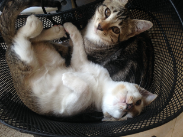
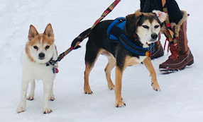
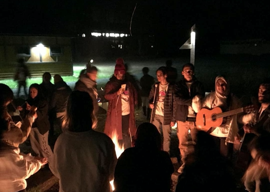
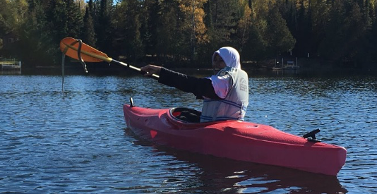
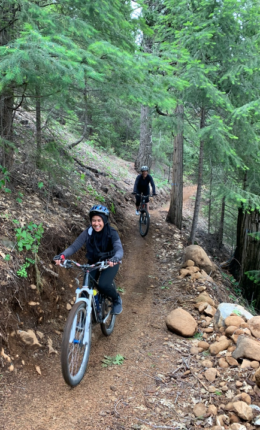

- F U N -
Fun Stuff

This is my family in Indonesia. The last time I saw them was this January. I think this picture was taken in 2018 on our morning walk.
These are two out seven of our cats in Indonesia. One day, the momma cat followed me home. My sister and I were persistent on insisting to keep her, so we did. The momma cat gave birth to 4 female kittens and then to 2 male kittens. Finally, we were able to save up some money to sterilize them.

This is my American family. They hosted me during my exchange year in 2016-2017. I went home to re-do my senior year in 2017-2018 because my senior exchange year didn't count. Then, I came back to the Twin Cities for college and lived with them for my freshman and sophomore years. Now, I am a Resident Advisor (RA) in Morrison, so I don't live with them anymore. I still come "home" every week or every other week.
These are my American family's dogs. They like to bark to pretty much anything. The beagle mixed one is so obsessed with food. However, they're so cute and cuddly.
I like to play guitar for fun. This picture was taken during Global Tommies Excursion in 2018
In general, I like to be outside. This picture was taken somewhere in the northsore. The snake was just swimming by, and we wanted to say hi.
City biking is fun! Downhill biking is kind of scary.

My American mom and I like to bike in the city. Sometimes, we get ice cream afterwards. That would define one of our perfect days!